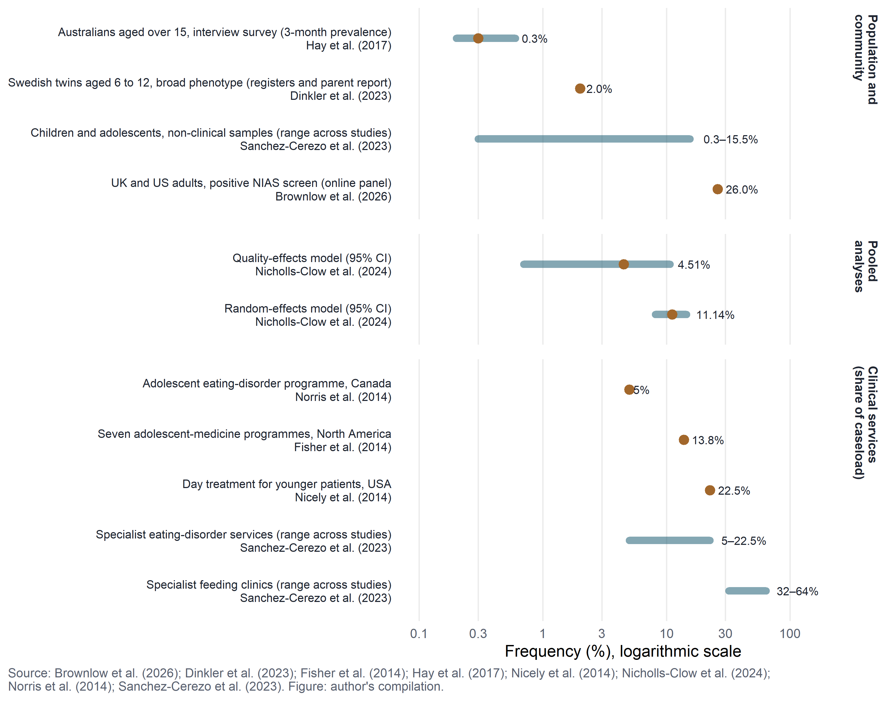
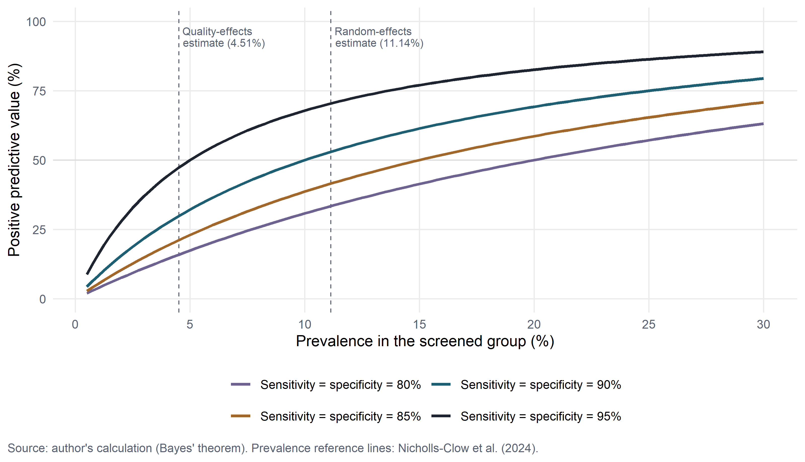

1 Counting a moving target: context and prevalence
TipIn plain words
ARFID is a fairly new diagnosis, and estimates of how common it is vary enormously, from a fraction of one per cent to about one in four, depending on who is asked and how. The spread is not just noise: it shows that different studies are counting different things. Short questionnaires flag far more people than a full clinical assessment confirms, and that gap matters for anyone designing a screening tool, including an AI one.
Epidemiology begins with a deceptively simple question: how many? For most psychiatric conditions the answer is contested at the margins but stable in its order of magnitude. For avoidant/restrictive food intake disorder (ARFID) it is not. Read naively, the literature suggests that ARFID affects roughly three in a thousand people, or one in fifty children, or one in ten of those sampled in pooled analyses, or one in four adults. A reader encountering these figures side by side might conclude that the field simply does not know. This chapter argues for a more useful conclusion: the figures differ because they measure different things, and the differences are themselves informative.
Three features make ARFID a moving target. The first is its youth as a diagnostic category. It entered the fifth edition of the Diagnostic and Statistical Manual of Mental Disorders in 2013 and the eleventh revision of the International Classification of Diseases later still, so the instruments for detecting it are new and the clinical populations used to calibrate them are small. The second is its internal heterogeneity: a single label covers a child who cannot tolerate the texture of most foods, an adolescent who rarely feels hungry, and a young person who stopped eating solid food after a frightening episode of choking. The third, and the one that most concerns this book, is that ARFID is defined partly by what it is not. Its criteria exclude any disturbance in the way body weight or shape is experienced (American Psychiatric Association, 2022). A condition defined by an absence is hard to count with instruments designed to detect a presence.
The chapter proceeds in five steps. Section 1.1 traces how the diagnosis came to exist and how it is measured. Section 1.2 reviews the main estimates of frequency through four different lenses (clinical caseloads, surveillance of new cases, population and community studies, and pooled analyses) and explains why they diverge. Section 1.3 examines who is counted, by age, sex and co-occurring conditions. Section 1.4 addresses the distance between a positive screen and a confirmed diagnosis, which is the single most important epidemiological fact for anyone building an early-detection tool. Section 1.5 summarises what is known about the consequences of the disorder, and Section 1.6 sets out what the numbers cannot yet tell us.
1.1 A diagnosis born in 2013
From a disorder of infancy to a disorder of the lifespan
Before 2013, children who ate too little or too narrowly, without the weight and shape concerns of anorexia nervosa, were classified either under feeding disorder of infancy or early childhood or under residual categories. The former required onset before the age of six (American Psychiatric Association, 2000), and so offered no home to an older child, an adolescent or an adult whose eating had become dangerously restricted for reasons unrelated to body image. Clinicians in adolescent medicine had long recognised such patients; what they lacked was a category that would let them be counted, studied and treated as a group.
The fifth edition of the DSM addressed the gap by replacing the infancy-bound diagnosis with ARFID and removing the age limit (American Psychiatric Association, 2022). In outline, the criteria require four things. First, an eating or feeding disturbance, such as an apparent lack of interest in eating, avoidance based on the sensory characteristics of food, or concern about the aversive consequences of eating, that results in a persistent failure to meet nutritional or energy needs. That failure must show itself in at least one of four ways: significant weight loss (or, in children, failure to achieve expected weight gain or faltering growth); significant nutritional deficiency; dependence on enteral feeding or oral nutritional supplements; or marked interference with psychosocial functioning. Second, the disturbance must not be better explained by a lack of available food or by a culturally sanctioned practice. Third, it must not occur exclusively during anorexia nervosa or bulimia nervosa, and there must be no evidence of a disturbance in the way body weight or shape is experienced. Fourth, it must not be attributable to a concurrent medical condition or better explained by another mental disorder; where it occurs alongside such a condition, its severity must exceed what that condition would ordinarily produce.
The eleventh revision of the International Classification of Diseases, in force since January 2022, followed the same path. It places avoidant-restrictive food intake disorder (code 6B83) alongside anorexia nervosa, bulimia nervosa and binge-eating disorder in a single grouping of feeding or eating disorders, and its description likewise excludes restriction explained by the unavailability of food, by another medical or mental condition, or by the effects of a substance (World Health Organization, 2025).
Two features of this definition shape everything that follows. The third criterion builds a body-image exclusion into the diagnosis itself, which is why the dominant public account of young people’s eating difficulties (the one that runs from appearance ideals through social comparison to restriction) does not describe ARFID (Dane & Bhatia, 2023). And the first criterion defines the disorder by its consequences (weight, growth, nutrition, supplements, functioning) as much as by its behaviours, which means that whether someone counts as a case depends heavily on whether those consequences are measured, and how.
Three presentations, one category
The DSM criteria name three illustrative drivers of restriction: sensory-based avoidance, lack of interest in eating or food, and fear of aversive consequences such as choking, vomiting or pain. Early instrument development treated these as three dimensions that can co-occur rather than as mutually exclusive subtypes (Bryant-Waugh et al., 2022; Zickgraf & Ellis, 2018). Empirical work has since confirmed that the boundaries are porous.
Two national surveillance studies have applied latent class analysis to children and adolescents newly diagnosed with ARFID. In Canada, a three-class model fitted best, with classes labelled acute medical, lack of appetite and sensory, to which cases were assigned with probabilities of 52%, 40.7% and 6.9% respectively. The acute-medical class was marked by recent weight loss, short illness duration and frequent hospitalisation; the lack-of-appetite class by failure to gain weight and faltering growth (Katzman et al., 2022). In the United Kingdom and the Republic of Ireland, four classes emerged, and the most common of them, accounting for 38.2% of cases, was a mixed presentation; the other three resembled the subtypes described in the literature. Age, sex, weight loss, distress around eating and an autism diagnosis predicted class membership (Sanchez-Cerezo, Neale, Julius, Croudace, et al., 2024). A French study of parent reports reached a similar conclusion by a different route, identifying five profiles of which three were combinations (Rubio & Rigal, 2026).
The epidemiological consequence is easy to state and easy to forget: a single prevalence figure for ARFID aggregates groups that differ in age of onset, medical acuity, comorbidity and, plausibly, in the environmental factors that matter to them. When later chapters ask how environments shape the disorder, they will need to ask which presentation is at issue.
Measuring ARFID
Counting a disorder requires instruments, and ARFID’s instruments are young. Table 1.1 summarises those most often used in the studies discussed in this chapter. They fall into two families. Structured clinical interviews, such as the Pica, ARFID and Rumination Disorder Interview (PARDI), approximate a diagnostic assessment but are costly and require trained interviewers. Self-report and parent-report questionnaires, such as the Nine Item ARFID Screen (NIAS) and the PARDI-ARFID Questionnaire (PARDI-AR-Q), are cheap and scalable but measure symptoms, not diagnoses.
| Instrument | Format | Original validation | Adaptations relevant to this book |
|---|---|---|---|
| NIAS | 9-item self-report; three subscales (picky eating, poor appetite, fear of negative consequences) | Adults recruited online and from a national panel, plus undergraduates; three-factor structure, good internal consistency and test–retest reliability (Zickgraf & Ellis, 2018) | Spanish version (S-NIAS) in Mexican youth aged 12–30, Cronbach’s α = 0.84 and measurement invariance across sex, age and mode of administration (Medina-Tepal et al., 2023); Spanish NIAS used in adults with systemic sclerosis in Spain (Alcala-Gonzalez et al., 2025) |
| PARDI | Semi-structured clinical interview covering diagnosis, presenting characteristics and severity | Used as reference standard in validation studies (Bryant-Waugh et al., 2022; Ortiz et al., 2025) | — |
| PARDI-AR-Q | Self-report questionnaire derived from the PARDI, with a diagnostic algorithm | 71 adolescents and adults aged 14–40; 90% of the ARFID group positive on the algorithm and 93% of healthy controls negative (Bryant-Waugh et al., 2022) | Turkish adolescents aged 12–18, four-factor structure, subscales largely unrelated to weight- and shape-related attitudes (Çelik et al., 2026); French parent-report version for children aged 2–16 (Rubio & Rigal, 2026) |
Two observations from the table matter for the rest of the book. First, the validation samples are small and, for adolescents, recent. Second, the Spanish-language evidence is thin: a Mexican adaptation of the NIAS for youth, and its use in a specific adult clinical population in Spain. There is, as far as the searches for this chapter could establish, no validated instrument studied in a general population of Spanish adolescents. For a book whose toolkit offers prompts in Spanish, that is a gap to be acknowledged rather than papered over.
NoteA note on the Spanish name
Spanish-language sources use at least two denominations, trastorno de evitación/restricción de la ingesta de alimentos and trastorno por evitación/restricción de la ingesta de alimentos, and either retain the English acronym ARFID or use a Spanish one. The book will adopt the form used in the official Spanish edition of the relevant classification and record the choice in the Glossary.
1.2 How common is ARFID? Four lenses
The estimates of ARFID’s frequency are best read not as competing answers to one question but as answers to four different questions, each asked through a different lens. Table 1.2 summarises them; Figure 1.1 plots the prevalence estimates on a common scale.
| Lens | What is counted | Typical source | Illustrative estimates |
|---|---|---|---|
| Clinical caseload | Share of patients in specialist services who meet ARFID criteria | Retrospective chart reviews | 5% of adolescent eating-disorder patients (Norris et al., 2014); 13.8% across seven North American adolescent-medicine programmes (Fisher et al., 2014); 22.5% in a day-treatment programme for younger patients (Nicely et al., 2014) |
| Surveillance of new cases | New diagnoses reaching secondary care per year | National paediatric and psychiatric surveillance units | 2.02 per 100,000 aged 5–18 in Canada (Katzman et al., 2021); 2.79 per 100,000 aged 5–17 in the UK (Sanchez-Cerezo, Neale, Julius, Lynn, et al., 2024) |
| Population and community | People in a defined population who meet criteria or a proxy for them | Household surveys, school samples, linked registers, online panels | 0.3% of Australians aged over 15 (Hay et al., 2017); 2.0% of Swedish twins aged 6–12 (Dinkler et al., 2023); 0.3–15.5% across non-clinical child and adolescent samples (Sanchez-Cerezo et al., 2023); 26.0% positive screens among UK and US adults (Brownlow et al., 2026) |
| Pooled analysis | A weighted average across studies | Systematic review and meta-analysis | 11.14% (random effects) versus 4.51% (quality effects) (Nicholls-Clow et al., 2024) |
Lens one: the clinical caseload
The first studies of ARFID were retrospective reviews of patients already in treatment. In a Canadian adolescent eating-disorder programme reviewing referrals between 2000 and 2011, 5% of patients met the new criteria (Norris et al., 2014). Across seven adolescent-medicine eating-disorder programmes in North America in 2010, 98 of 712 patients aged 8–18, or 13.8%, did so (Fisher et al., 2014). In a day-treatment programme for younger patients aged 7–17, the figure was 39 of 173, or 22.5% (Nicely et al., 2014). A systematic review later summarised the range in specialised eating-disorder services as 5–22.5%, and in specialist feeding clinics as 32–64% (Sanchez-Cerezo et al., 2023).
These figures say more about referral pathways than about populations. A day programme for younger children will see more ARFID than an adolescent programme designed around anorexia nervosa; a feeding clinic will see more still. The caseload lens is indispensable for planning services, but it cannot tell us how many young people in a community have the disorder, because it only sees those who arrive.
Lens two: surveillance of new cases
National surveillance systems ask a large panel of clinicians to report every new case they diagnose over a fixed period. Canada’s Paediatric Surveillance Program did this for ARFID in 2016–2017, surveying some 2,700 paediatricians monthly. It identified 207 new cases, with a mean age of 13.1 years, and estimated an incidence of 2.02 per 100,000 children and adolescents aged 5–18 (Katzman et al., 2021). A comparable study through the British Paediatric Surveillance Unit and the Child and Adolescent Psychiatry Surveillance System, in 2021–2022, identified 319 eligible new cases aged 5–17, with a mean age of 11.2 years, and an observed annual incidence of 2.79 per 100,000 in the United Kingdom (Sanchez-Cerezo, Neale, Julius, Lynn, et al., 2024).
These are rigorous studies, and their authors are explicit about what they measure: new cases that reach secondary care and are recognised as ARFID by a specialist. Everything upstream of that point (cases that are never referred, referred under another label, or managed in primary care) is invisible to the method. Surveillance therefore provides a floor, and a valuable one for service planning, but not an estimate of how many young people are affected.
Lens three: population and community studies
Population studies try to count cases where they live rather than where they are treated. They differ widely in method. Two sequential Australian household surveys of people aged over 15, conducted by interview in 2014 and 2015, found a three-month prevalence of ARFID of 0.3% in each year, lower than that of bulimia nervosa or broadly defined binge-eating disorder but associated with particularly poor mental health-related quality of life (Hay et al., 2017). A Swedish study linking parent reports from a national twin cohort to patient and prescription registers identified a broad ARFID phenotype in 682 of 33,902 children aged 6–12, or 2.0% (Dinkler et al., 2023). Across non-clinical samples of children and adolescents more generally, estimates have ranged from 0.3% to 15.5% (Sanchez-Cerezo et al., 2023).
At the far end of the range sits a population-based internet survey of 4,002 adults in the United Kingdom and the United States, with demographic quotas. Here 26.0% screened positive on the NIAS. Positive screens were more frequent among women than men (29.6% versus 22.1%) and declined with age, from 31.6% among those aged 18–39 to 16.1% among those aged 65 and over (Brownlow et al., 2026). The same dataset showed that positive screens were markedly more common among adults with disorders of gut–brain interaction, 34.6% against 19.4% among those without (Flack et al., 2026).
Lens four: pooling the evidence
The most comprehensive synthesis to date is a pre-registered meta-analysis of 26 studies published between 2013 and 2024, with a combined sample of 122,861 people (Nicholls-Clow et al., 2024). Its central finding is methodological. A conventional random-effects model gave a pooled prevalence of 11.14% (95% CI 8.16–14.5%). A quality-effects model, which weights studies by an appraisal of their methodological validity, gave 4.51% (95% CI 0.7–10.68%). Similar contrasts appeared in subgroups by gender, age group and clinical status. The authors draw two conclusions: that even the conservative estimate makes ARFID a common disorder, and that future studies need larger samples, standardised diagnostic measures and clearer reporting.
Reading the spread: the coastline problem
Set side by side, the prevalence estimates alone span two orders of magnitude, from three per thousand in an interview-based household survey to one in four positive screens in an online panel; incidence in specialist care, a different quantity, is lower still, at two to three new cases per 100,000 a year. It would be a mistake to average these figures, and an equal mistake to dismiss them.
A helpful analogy comes from geography. The length of a coastline depends on the length of the ruler used to measure it: a ruler a kilometre long skips every cove and headland, while a ruler a metre long follows each one, and the measured coastline grows accordingly. No measurement is wrong; each answers a question set by its instrument. The epidemiology of ARFID behaves similarly. A surveillance system that counts only specialist diagnoses uses a long ruler; a nine-item online screen uses a very short one, which follows every irregularity of eating, including many that would not meet diagnostic criteria. Between them, interview-based surveys and register linkage use rulers of intermediate length.
Three practical lessons follow. The first is that every figure should be quoted with its ruler attached: who was counted, how, where and over what period. The second is that the quality of the measurement matters at least as much as the size of the sample, as the contrast between the random-effects and quality-effects estimates shows (Nicholls-Clow et al., 2024). The third, developed in Section 1.4, is that the shorter the ruler, the more of what it detects will turn out, on closer inspection, not to be the disorder at all.
The broader context also deserves a word. Long-run epidemiological series from the Netherlands suggest that the overall incidence of eating disorders did not rise between 1975 and 2024, with the notable exception of anorexia nervosa among girls aged 10–14, while reported cases have risen in many countries since the onset of the COVID-19 pandemic (Hoek, 2025). The rapid growth of ARFID in the clinical and research literature over the past decade should therefore be read, at least in part, as the visibility effect of a new category and of new instruments; none of the studies reviewed here measures a change in its incidence over time.
1.3 Who is counted: age, sex and co-occurring conditions
Age
Across clinical studies, young people with ARFID present earlier than those with anorexia nervosa. In the North American multi-site study, their mean age was 12.9 years against 15.6 for anorexia nervosa and 16.5 for bulimia nervosa, and they had been unwell for longer before presenting: 33.3 months on average, against 14.5 and 23.5 (Fisher et al., 2014). In a Spanish clinical sample from the Hospital Sant Joan de Déu in Barcelona, patients with ARFID were younger at assessment (10.8 against 14.1 years), had an earlier onset (6.2 against 13.4 years) and a much longer course before assessment (61.2 against 8.4 months) than those with anorexia nervosa (Cañas et al., 2021). Onset is commonly before puberty, which makes growth a key marker of impact (Tanner & Richmond, 2024).
Age also shapes the presentation. In the Canadian surveillance data, older children and adolescents were more likely than younger children to report eating too little and loss of appetite, to be medically compromised, to have co-occurring anxiety and depression, and to be admitted to hospital: 13.3% of those aged 5–9, 41.7% of those aged 10–14 and 55.6% of those aged 15–18 (Katzman et al., 2021). For an adolescent-focused book, this is a sobering gradient: the age band on which the toolkit concentrates is also the one in which ARFID is most likely to be medically serious by the time it is recognised.
Sex
ARFID’s sex distribution differs from that of anorexia nervosa, but not in a single direction across settings. In clinical samples, boys make up a markedly larger share of ARFID than of anorexia nervosa: 29% against 15% in the North American multi-site study (Fisher et al., 2014), and 60.6% against 6.1% in the Spanish sample (Cañas et al., 2021); earlier Canadian and US studies reported the same tendency (Nicely et al., 2014; Norris et al., 2014). UK surveillance found a slightly higher incidence in boys than in girls (2.98 against 2.58 per 100,000) (Sanchez-Cerezo, Neale, Julius, Lynn, et al., 2024), whereas in the Canadian surveillance sample 61.4% of cases were girls (Katzman et al., 2021). Among adults screened online, positive screens were more common in women (Brownlow et al., 2026).
The inconsistency is itself a finding. It suggests that the sex ratio depends on age, on referral pathways and on the instrument, and it warns against importing assumptions from anorexia nervosa, whose overwhelmingly female profile has shaped both public images of eating disorders and, potentially, the training data of the AI systems discussed in Chapter 5.
Co-occurring conditions
Co-occurring conditions are the rule rather than the exception. A systematic review of child and adolescent studies reported anxiety disorders in 9.1–72% of cases and autism in 8.2–54.75% (Sanchez-Cerezo et al., 2023); a later meta-analysis estimated that 16.27% of people with ARFID have an autism diagnosis (Sader et al., 2025). In the North American multi-site study, 55% of patients with ARFID had a co-occurring medical condition, against 10% of those with anorexia nervosa, and 58% had an anxiety disorder, while mood disorders were less frequent (19% against 31%) (Fisher et al., 2014). In the Spanish sample, medical comorbidity was found in 42.4% of patients with ARFID against 12.1% of those with anorexia nervosa, and psychiatric comorbidity in 81.8% against 33.3% (Cañas et al., 2021). Youth with ARFID in a US study were more than ten times as likely as healthy controls to report gastrointestinal conditions (37% against 3%) and twice as likely to report immune-mediated conditions (Burton-Murray et al., 2024).
These patterns matter for counting in two ways. They concentrate risk in identifiable groups (autistic young people, those with anxiety, those with gastrointestinal and immune conditions), which is where targeted screening is most efficient (Section 2.4). And they complicate the fourth diagnostic criterion: when a young person with a digestive condition restricts food, the clinician must judge whether the restriction exceeds what the condition would ordinarily produce. A study of adults with systemic sclerosis in Spain, in which 49.5% screened positive on the Spanish NIAS, just over half of them on the fear-of-consequences dimension, illustrates how hard that judgement can be (Alcala-Gonzalez et al., 2025).
1.4 From positive screen to diagnosis
The base-rate problem
The figure of 26% positive screens among adults (Brownlow et al., 2026) is not a prevalence of ARFID, and its authors do not present it as one. The distance between a positive screen and a confirmed diagnosis is the single most important epidemiological fact for the design of early-detection tools, and it can be measured.
In a validation study drawn from a large genetic study of ARFID, 25 adults and 25 parents of children who had screened positive were assessed with the PARDI interview. The proportion of screen-positives confirmed as ARFID, the positive predictive value (PPV), was 55.0% for adults and 76.0% for parent reports with the PARDI-AR-Q, and 45.8% and 64.0% with the NIAS (Ortiz et al., 2025). Even in a sample recruited into a study of ARFID, whose members had already screened positive, between about a quarter and just over half of positive screens did not correspond to a diagnosis.
In the general population the proportion would be lower, for a reason that has nothing to do with the quality of any particular questionnaire. The PPV of a test depends not only on its sensitivity (the share of true cases it detects) and specificity (the share of non-cases it correctly clears) but also on the prevalence of the condition in the group tested. When a condition is uncommon, even a good test produces more false alarms than true detections, because the false alarms are drawn from the much larger pool of people without the condition.
A worked example makes the point concrete. Imagine a screen with 85% sensitivity and 85% specificity, figures chosen for illustration rather than taken from any instrument, applied to 1,000 adolescents. If the true prevalence is 4.5%, close to the quality-effects estimate, about 45 of them have ARFID; the screen detects 38 and misses 7. Of the 955 without ARFID, 15% (about 143) also screen positive. Of the 181 positive screens, then, only 38, or roughly one in five, are true cases. If the true prevalence is 11.1%, close to the random-effects estimate, the PPV rises to about 41%: better, but still a minority. Figure 1.2 shows how the PPV changes across the plausible range of prevalence for four combinations of sensitivity and specificity; the toolkit lets readers explore the same calculation interactively.

An alarm needs an officer
Airport security offers a familiar analogy. The walk-through metal detector is deliberately sensitive: it sounds for belt buckles, keys and coins far more often than for anything dangerous, and nobody regards this as a failure. It works because a second, more specific step follows: an officer with a hand-held detector who resolves each alarm. A screening questionnaire is the arch; a clinical assessment is the officer. A screen deployed without a clear route to assessment is an alarm without an officer: it produces anxiety, labels and, in a young population, a real risk of iatrogenic harm, without the means of resolving any of it.
ImportantFor practice
- A positive screen for ARFID is a reason for a conversation and a referral, not a diagnosis. In community settings, most positive screens will not be confirmed.
- Where screening is used, it should be targeted at groups with higher prior probability (for example autistic young people, or those attending gastroenterology or anxiety services), where the PPV is higher (Section 2.4).
- Signs of medical compromise (weight loss, faltering growth, dependence on supplements, or physiological instability) warrant medical assessment irrespective of any questionnaire score.
This is the epidemiological foundation of the design principles set out in Section 5.4. A tool aimed at worried parents, teachers or young people will, by construction, be used in groups where most people do not have the disorder. If such a tool labelled, most of its labels would be wrong. It must therefore route rather than label: organise observations, signal urgency where present, and hand the decision to a professional.
1.5 Burden and consequences
If ARFID’s frequency is uncertain, its seriousness in clinical populations is not. Young people with ARFID in clinical series are frequently underweight: in the North American multi-site study, their median body weight was intermediate between that of patients with anorexia nervosa and bulimia nervosa (Fisher et al., 2014), and a day-treatment cohort showed degrees of weight loss and malnutrition similar to those of other eating disorders, together with greater dependence on nutritional supplements (Nicely et al., 2014). In a Canadian adolescent programme, about a third of patients with ARFID required hospital admission for medical instability, and four of 34 were later reclassified as having anorexia nervosa as their symptoms evolved (Norris et al., 2014). Because onset often precedes puberty, faltering growth and its long-term consequences for adult height require monitoring against genetic potential (Tanner & Richmond, 2024). Nutritional restriction may also leave metabolic traces: youth with ARFID showed elevated triglycerides and high-sensitivity C-reactive protein more often than healthy controls, which the authors relate to limited dietary variety (Burton-Murray et al., 2024).
The burden extends beyond the medical. In the Australian household surveys, people with ARFID had poor mental health-related quality of life and lower role performance than people without an eating disorder (Hay et al., 2017). Among adults screened online, a positive ARFID screen was associated with underweight, somatic symptoms, mood disturbance, reduced physical and mental quality of life and greater use of healthcare (Brownlow et al., 2026). Qualitative work with adult women describes the disorder’s lived texture as a trade-off between safety and freedom: restriction protects against the unknowns of food at the cost of spontaneity and social life (Ruiz Fischer & Starr, 2024).
On outcomes, the evidence is thinner. At one-year follow-up in UK surveillance, clinicians judged that 54.8% of cases had improved (Sanchez-Cerezo, Neale, Julius, Lynn, et al., 2024), a figure that is encouraging but rests on clinical impression rather than standardised measures. Systematic evidence on psychological treatment for ARFID remains scarce compared with other eating disorders (Russell et al., 2023), and difficulties linked to sensory sensitivity and mealtime routines often persist into adolescence and adulthood, particularly among autistic people (Keski-Rahkonen & Ruusunen, 2023). We have not located population-based mortality estimates for ARFID; the long-run mortality literature on eating disorders largely predates the category.
1.6 What the numbers cannot tell us
Four limits deserve to be stated plainly, because each shapes what the rest of this book can and cannot claim.
Heterogeneity of method. The studies reviewed here differ in population, setting, instrument, threshold and time window, and they are dominated by English-speaking countries and by retrospective clinical data (Nicholls-Clow et al., 2024; Sanchez-Cerezo et al., 2023). Any single figure is a coordinate in this space, not a fact about ARFID as such.
What surveillance cannot see. Incidence studies count what reaches specialists. In systems where primary care and schools are the first point of contact, much of the disorder’s natural history unfolds before, or without, specialist recognition. The gap between incidence in secondary care and prevalence in the community is precisely the space in which early detection operates.
Spain and Spanish-speaking adolescents. The evidence available for Spain is limited to a paediatric clinical sample (Cañas et al., 2021) and to adults with a specific medical condition (Alcala-Gonzalez et al., 2025). In the searches conducted for this chapter we found no population-based estimates for Spanish children or adolescents, and no screening instrument validated in that population; the closest is a Spanish-language adaptation validated in Mexican youth (Medina-Tepal et al., 2023). Awareness of ARFID among adolescents themselves is reported to be limited, although the available data are sparse (Zięba et al., 2025). TODO: complete a search of Spanish-language databases (IBECS, Dialnet) and regional health-service reports.
The body-image boundary. The exclusion of weight and shape concern is clear on paper but porous in practice. Young people grow up surrounded by appearance ideals, and a child with ARFID may also value thinness without that value driving the restriction (Barney et al., 2022); conversely, some patients first classified as ARFID later meet criteria for anorexia nervosa (Norris et al., 2014). Instruments that measure the two families of motivation separately (Çelik et al., 2026) are necessary, but the boundary will remain a site of clinical judgement.
These limits point forward. Chapter 2 takes up the heterogeneity of presentations and the groups at highest risk. Chapter 3 asks how genetic liability and environments combine. Chapter 4 asks what digital environments might add, a question that, as this chapter has shown, cannot be answered without first being clear about what is being counted. And Chapter 5 draws the practical conclusion of Section 1.4: in groups where most people do not have the disorder, a responsible tool routes, and does not label.
NoteKey points
- ARFID entered the DSM in 2013 and ICD-11 as code 6B83; it is defined partly by the absence of weight and shape concern, and by consequences for weight, growth, nutrition and functioning.
- Its three classic presentations (sensory, lack of interest, fear) frequently combine; mixed presentations are common.
- Frequency estimates span two orders of magnitude because they measure different things: clinical caseload, incidence in specialist care, population prevalence, positive screens, and pooled averages.
- The quality of the measurement changes the answer: pooled prevalence falls from 11.14% to 4.51% when studies are weighted by quality.
- In community settings most positive screens are not confirmed; tools for the public must route to assessment rather than label.